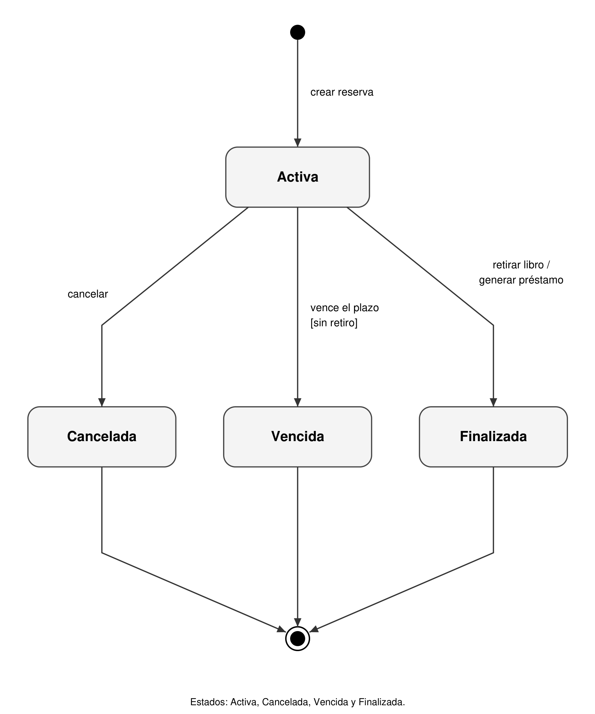
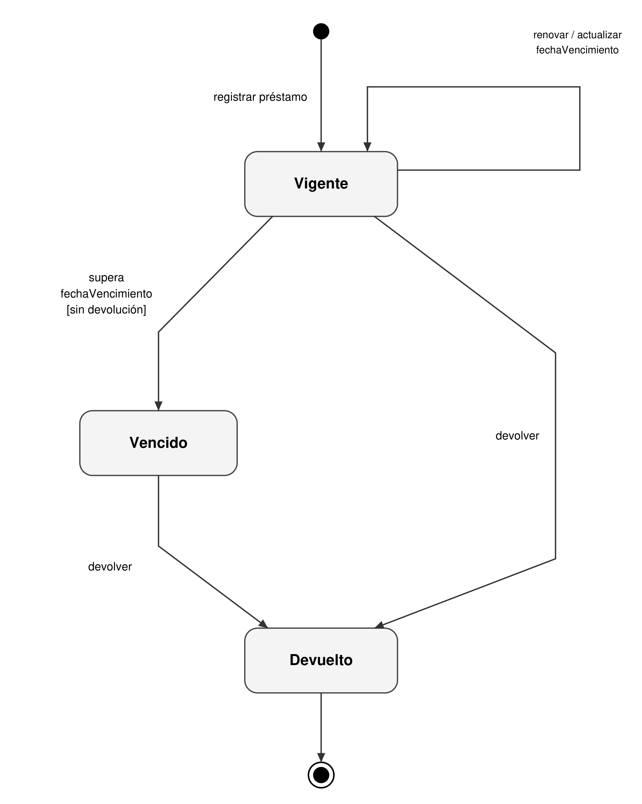
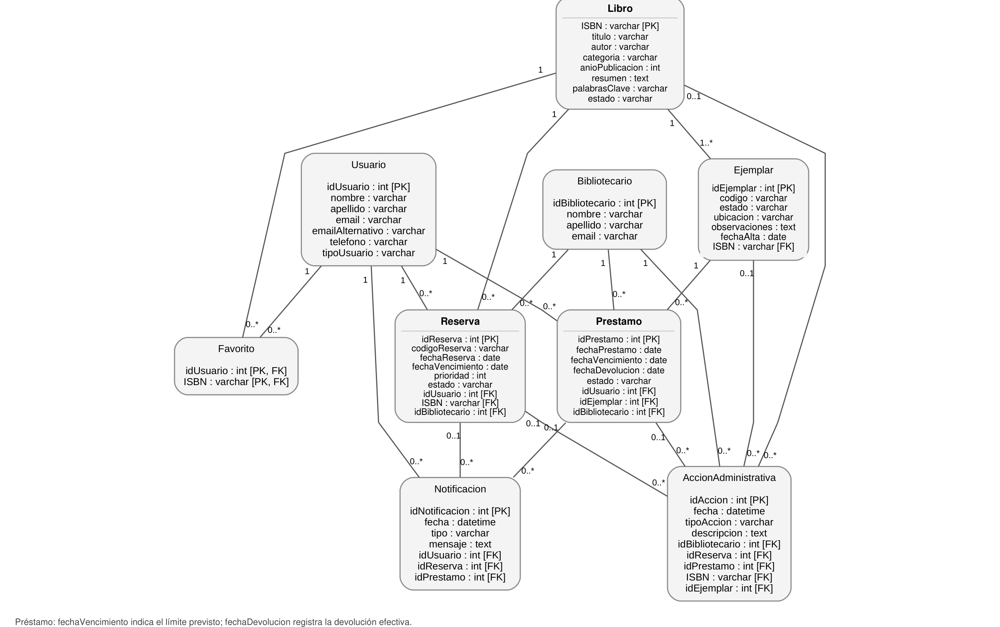

El presente informe tiene como objetivo documentar la definición, el alcance y los requerimientos iniciales del proyecto BookTrack, proporcionando una base clara para su desarrollo y posterior evaluación.
2. Definición del Proyecto
El sistema utilizará los datos de autenticación de los usuarios provistos por una API externa del sistema SysAcad. Por lo tanto, el proyecto no contempla el desarrollo de un módulo propio de registro de usuarios, sino la integración con dicho servicio para validar las credenciales de acceso.
El objetivo principal de este proyecto es desarrollar un sistema integral para la gestión y control de reservaciones de libros de la biblioteca de la UTN-FRD, con el fin de modernizar y optimizar el proceso de préstamo y consulta del material bibliográfico disponible.
El sistema permitirá que los usuarios puedan buscar libros de manera práctica, consultar su disponibilidad en tiempo real, realizar reservas de forma online y acceder a su historial de reservas, clasificadas como “Activas”, “Canceladas”, “Vencidas” o “Finalizadas” (retiradas), y de préstamos “Vigentes”, “Vencidos” o “Devueltos”. La proximidad al vencimiento se informa mediante una alerta y no constituye un estado. De esta manera, se evitarán trámites manuales o presenciales innecesarios. A su vez, facilitará al personal administrativo de la biblioteca la gestión de reservas, el registro de retiros y devoluciones, y el seguimiento de los préstamos realizados.
Además, el proyecto busca mejorar la organización interna de la biblioteca, reducir errores en el registro de reservas, agilizar la atención a estudiantes y docentes, y brindar una herramienta digital que centralice la información sobre libros, usuarios y movimientos del sistema. De esta manera, se pretende contribuir a una gestión más eficiente, ordenada y accesible de los recursos bibliográficos de la institución.
3. Requisitos del Proyecto
3.1. Requisitos Funcionales (RF)
Los requisitos funcionales describen las funciones y tareas que el sistema debe poder realizar.
RF01 - Autenticación con SysAcad El sistema deberá permitir el inicio de sesión de alumnos, docentes y personal autorizado mediante la validación de credenciales contra una API externa de SysAcad o, durante el desarrollo, mediante un servicio simulado.
RF02 - Cierre de sesión El sistema deberá permitir que el usuario cierre sesión de forma segura, evitando accesos no autorizados desde dispositivos compartidos o públicos.
RF03 - Tablero de usuario El sistema deberá mostrar al usuario un tablero principal con el resumen de sus reservas activas, libros pendientes de retiro, préstamos vigentes y fechas próximas de devolución.
RF04 - Edición de datos de contacto El sistema deberá permitir que el usuario cargue o actualice datos de contacto secundarios, como correo electrónico alternativo o teléfono, para recibir avisos relacionados con sus reservas y préstamos.
RF05 - Búsqueda de libros El sistema deberá permitir la búsqueda de libros por título, autor, categoría, ISBN, año de publicación o palabra clave.
RF06 - Consulta de ubicación física El sistema deberá mostrar la ubicación física del libro dentro de la biblioteca, indicando información como estante, sector o pasillo, en caso de que dichos datos estén disponibles.
RF07 - Visualización de libros relacionados El sistema deberá permitir visualizar libros relacionados por autor, categoría o temática al consultar la ficha detallada de un libro.
RF09 - Validación de disponibilidad El sistema deberá verificar la disponibilidad de ejemplares antes de permitir la creación de una reserva, impidiendo reservar libros sin stock disponible.
RF10 - Identificador de reserva El sistema deberá asignar un identificador único de reserva que permita identificar la solicitud al momento de retirar el libro en la biblioteca.
RF11 - Cancelación de reservas El sistema deberá permitir que el usuario cancele una reserva activa, siempre que el libro aún no haya sido retirado.
RF12 - Renovación de préstamo El sistema deberá permitir que el usuario solicite la renovación de un préstamo vigente, siempre que no existan reservas activas de otros usuarios sobre el mismo ejemplar.
RF13 - Gestión de reservas y retiros El sistema deberá permitir al personal administrativo visualizar las reservas activas, registrar el retiro del libro (la reserva pasa a Finalizada y se genera el préstamo), cancelar reservas y atender la cola por fecha de reserva y orden de registro.
RF14 - Alta de libros y ejemplares El sistema deberá permitir al personal administrativo registrar nuevos libros y ejemplares físicos en el catálogo de la biblioteca.
RF15 - Registro del estado del ejemplar El sistema deberá permitir registrar observaciones sobre el estado físico de los ejemplares, como daños, deterioro, pérdida o necesidad de reparación.
RF16 - Alertas automáticas El sistema deberá generar alertas internas o notificaciones cuando una reserva esté por vencer, un préstamo se encuentre próximo a su fecha de devolución o exista una devolución vencida. «Por vencer» no es un estado: es una condición derivada de la fecha de vencimiento que dispara la alerta.
RF17 - Confirmación de reserva El sistema deberá notificar al usuario cuando su reserva sea creada (activa), cancelada, vencida o finalizada (retiro del libro).
RF18 - Reporte de demanda de libros El sistema deberá permitir al personal administrativo consultar reportes sobre los libros más reservados o solicitados, con el fin de apoyar la toma de decisiones sobre adquisición de ejemplares.
RF19 - Listado de usuarios con préstamos vencidos El sistema deberá permitir generar un listado de usuarios que posean préstamos vencidos, indicando los libros pendientes de devolución y la fecha de vencimiento correspondiente.
RF20 - Auditoría administrativa El sistema deberá registrar las acciones administrativas relevantes, como registro de retiros, cancelaciones, devoluciones, renovaciones y modificaciones de ejemplares.
3.2. Requisitos No Funcionales (RNF)
Los requisitos no funcionales describen criterios que pueden usarse para juzgar la operación del sistema, en lugar de comportamientos específicos (ej. rendimiento, seguridad, usabilidad).
RNF01 - Protección de datos El sistema deberá proteger la información personal de los usuarios, evitando accesos no autorizados a datos como historial de reservas, préstamos y datos de contacto.
RNF02 - Seguridad de sesión El sistema deberá utilizar mecanismos seguros de autenticación basados en tokens o sesiones con tiempo de expiración definido.
RNF03 - Control de solicitudes El sistema deberá limitar la cantidad de solicitudes realizadas por un mismo usuario en un período determinado para evitar abusos o sobrecarga del servidor.
RNF04 - Control de acceso por roles El sistema deberá restringir el acceso a las funcionalidades según el rol del usuario, diferenciando entre alumnos, docentes y personal administrativo.
RNF05 - Tiempo de respuesta El sistema deberá responder a las búsquedas, consultas de disponibilidad y operaciones principales en un tiempo razonable, preferentemente menor a 2 segundos bajo condiciones normales de uso.
RNF06 - Concurrencia de usuarios El sistema deberá soportar el acceso simultáneo de múltiples usuarios sin afectar de manera significativa su funcionamiento.
RNF07 - Optimización de recursos visuales El sistema deberá optimizar el uso de imágenes, portadas y recursos visuales para favorecer tiempos de carga adecuados.
RNF08 - Escalabilidad de la base de datos El sistema deberá estar diseñado para permitir el crecimiento progresivo de la base de datos sin degradar significativamente el rendimiento.
RNF09 - Diseño responsive El sistema deberá adaptarse correctamente a distintos dispositivos, incluyendo computadoras de escritorio, notebooks, tablets y teléfonos móviles.
RNF10 - Usabilidad El sistema deberá contar con una interfaz clara, simple e intuitiva, permitiendo que los usuarios utilicen las funciones principales sin requerir capacitación previa.
RNF11 - Accesibilidad visual El sistema deberá contemplar criterios básicos de accesibilidad visual, como contraste adecuado, textos legibles y navegación clara.
RNF12 - Mensajes de error descriptivos El sistema deberá mostrar mensajes de error claros y comprensibles para el usuario, evitando mensajes técnicos innecesarios.
RNF13 - Disponibilidad del sistema El sistema deberá encontrarse disponible durante los horarios definidos por la institución, salvo interrupciones por mantenimiento programado o fallas externas.
RNF14 - Respaldo de información El sistema deberá contemplar mecanismos de respaldo periódico de la información para evitar la pérdida de datos ante fallas técnicas.
RNF15 - Mantenibilidad del código El sistema deberá desarrollarse siguiendo una estructura modular y documentada, facilitando su mantenimiento y futuras modificaciones.
RNF16 - Registro de errores técnicos El sistema deberá registrar errores técnicos relevantes, como fallas de conexión, problemas de autenticación o errores en la comunicación con servicios externos.
RNF17 - Compatibilidad con navegadores El sistema deberá ser compatible con navegadores web modernos, como Google Chrome, Mozilla Firefox, Microsoft Edge y equivalentes.
RNF18 - Despliegue mediante contenedores El sistema deberá poder ejecutarse mediante contenedores, facilitando su instalación, configuración y despliegue en distintos entornos.
RNF19 - Integración con servicios externos El sistema deberá estar preparado para comunicarse con servicios externos mediante APIs REST y formatos de intercambio de datos estándar, como JSON.
RNF20 - Privacidad institucional El sistema deberá utilizar los datos de los usuarios únicamente para fines relacionados con la gestión de reservas, préstamos y administración de la biblioteca de la UTN-FRD.
4. Modelado del Comportamiento
4.1. Diagrama de Casos de Uso
BookTrack - Documentación técnica
4.2. Casos de Uso Principales
A continuación, se detallan al menos tres (3) de los casos de uso principales identificados para el sistema.
Caso de Uso Principal 1: CU01 - Iniciar sesión
Campo
Detalle
Identificador
CU01
Nombre
Iniciar sesión
Actor Principal
Usuario
Actor Secundario
API SysAcad
Objetivo
Permitir que el usuario acceda al sistema utilizando sus credenciales institucionales.
Flujo Principal
El usuario ingresa sus credenciales.
El sistema envía los datos a la API de SysAcad o al servicio simulado.
La API valida si el usuario corresponde a un alumno, docente o personal autorizado.
El sistema permite el acceso.
El sistema muestra el tablero principal del usuario.
Flujo alternativo
Si las credenciales son incorrectas, el sistema muestra un mensaje de error.
Si la API de SysAcad no responde, el sistema informa que el servicio no está disponible.
Caso de Uso Principal 2: CU02 - Buscar libro
Campo
Detalle
Identificador
CU02
Nombre
Buscar libro
Actor Principal
Usuario
Objetivo
Permitir que el usuario encuentre libros dentro del catálogo.
Flujo Principal
El usuario ingresa un título, autor o palabra clave.
El sistema busca coincidencias en el catálogo.
El sistema muestra el listado de libros encontrados.
El usuario selecciona un libro para ver más información.
Flujo Alternativo
Si no hay resultados, el sistema informa que no se encontraron libros relacionados.
Caso de Uso Principal 3: CU03 - Consultar detalle y disponibilidad del libro
Campo
Detalle
Identificador
CU03
Nombre
Consultar detalle y disponibilidad del libro
Actor Principal
Usuario
Objetivo
Permitir que el usuario vea la información completa del libro y su disponibilidad.
Flujo Principal
El usuario selecciona un libro del catálogo.
El sistema muestra la ficha del libro.
El sistema informa si el libro está disponible, prestado o reservado.
El sistema muestra datos como autor, resumen, ubicación física y código del libro.
Flujo Alternativo
Si el libro no tiene ejemplares disponibles, el sistema informa que no puede solicitarse en ese momento o permite generar una reserva, según la regla definida.
Caso de Uso Principal 4: CU04 - Solicitar préstamo o reserva
Campo
Detalle
Identificador
CU04
Nombre
Solicitar préstamo o reserva
Actor Principal
Usuario
Objetivo
Permitir que el usuario solicite un libro disponible o reserve uno que se encuentre prestado.
Flujo Principal
El usuario selecciona un libro.
El usuario presiona la opción de solicitar préstamo o reserva.
El sistema valida la disponibilidad del ejemplar.
El sistema registra la reserva en estado Activa.
El sistema muestra una confirmación de la operación.
Flujo Alternativo
Si no hay stock disponible, el sistema informa que no puede procesar el préstamo directo.
Si el usuario tiene restricciones o préstamos vencidos, el sistema puede impedir la operación.
Caso de Uso Principal 5: CU05 - Ver préstamos activos y fechas de devolución
Campo
Detalle
Identificador
CU05
Nombre
Ver préstamos activos y fechas de devolución
Actor Principal
Usuario
Objetivo
Permitir que el usuario consulte sus préstamos vigentes y sus fechas de vencimiento.
Flujo Principal
El usuario accede a su panel o historial.
El sistema muestra sus préstamos activos.
El sistema indica la fecha de devolución de cada libro.
El sistema destaca los préstamos próximos a vencer (alerta derivada de la fecha de vencimiento).
Flujo Alternativo
Si el usuario no tiene préstamos activos, el sistema muestra un mensaje informativo.
Caso de Uso Principal 6: CU06 - Gestionar préstamos y reservas activas
Campo
Detalle
Identificador
CU06
Nombre
Gestionar préstamos y reservas activas
Actor Principal
Bibliotecaria
Objetivo
Permitir que el personal de biblioteca administre las reservas y préstamos activos.
Flujo Principal
La bibliotecaria ingresa al panel administrativo.
El sistema muestra las reservas activas y los préstamos vigentes.
La bibliotecaria revisa una reserva.
La bibliotecaria registra el retiro del libro (la reserva pasa a Finalizada y se genera el préstamo), cancela la reserva o registra la devolución de un préstamo.
El sistema actualiza el estado de la reserva o préstamo.
El sistema registra la acción administrativa.
Flujo Alternativo
Si no hay reservas activas, el sistema muestra el panel vacío.
Si no hay stock disponible, el sistema impide registrar el retiro.
4.3. Diagrama de estados - Reserva
Una reserva activa finaliza al retirar el libro y generar el préstamo.

Alerta (RF16): «por vencer» no es un estado; es una condición derivada de la fecha de vencimiento de la reserva activa.
BookTrack - Documentación técnica
4.4. Diagrama de estados - Préstamo
Un préstamo permanece vigente hasta su vencimiento o devolución.

Alerta (RF16): la proximidad al vencimiento es una condición derivada de fechaVencimiento, no un estado. La renovación solo se admite sobre un préstamo Vigente (RF12).
BookTrack - Documentación técnica
5. Diagrama entidad-relación
Lleva el modelo conceptual al nivel de datos, incorporando claves primarias, claves foráneas y relaciones entre las tablas.

BookTrack - Documentación técnica
6. Registro de cambios (v2)
Cambios respecto de la v1, a partir de las correcciones del profesor sobre los diagramas.
Sección
v1
v2
2. Definición del Proyecto
Historial de reservas «Pendientes», «Aprobadas», «Vencidas» o «Por vencer»; «aprobación o rechazo de reservas».
Reservas Activas, Canceladas, Vencidas o Finalizadas; préstamos Vigentes, Vencidos o Devueltos; «por vencer» como alerta; gestión de reservas, retiros y devoluciones.
RF11
Cancelar reserva pendiente o aprobada.
Cancelar reserva activa.
RF12
Reservas pendientes de otros usuarios.
Reservas activas de otros usuarios.
RF13
Aprobar o rechazar solicitudes de reserva.
Gestión de reservas y retiros (registrar retiro y cancelar).
RF16
—
Aclara que «por vencer» es una condición derivada, no un estado.
RF17
Notificar aprobada, rechazada, cancelada o vencida.
Notificar creada (activa), cancelada, vencida o finalizada.
RF20
Aprobación de reservas, rechazo de solicitudes.
Registro de retiros, cancelaciones, devoluciones y renovaciones.
RNF02
Título con error tipográfico («d e sesión»).
Corregido a «Seguridad de sesión».
CU04
«Registra la solicitud».
«Registra la reserva en estado Activa».
CU05
Destaca préstamos próximos a vencer.
Aclara que es una alerta derivada de la fecha.
CU06
Reservas pendientes; aprobar o rechazar; impide aprobar sin stock.
Reservas activas; registrar retiro, cancelar o registrar devolución; impide registrar el retiro sin stock.
4.1 Casos de uso
«Gestionar préstamos activos y reservas pendientes».
«…y reservas activas». Diagrama regenerado.
4.3 Estados - Reserva
Pendiente, Aprobada, Por vencer, Vencida, Rechazada, Cancelada.
Activa → Cancelada / Vencida / Finalizada (retiro, genera Préstamo). Eliminados Pendiente, Aprobada, Rechazada y PorVencer.
4.4 Estados - Préstamo
Vigente, Por vencer, Vencido, Devuelto.
Vigente (renovar) → Vencido → Devuelto; Vigente → Devuelto. Eliminado PorVencer; no hay renovar desde Vencido.
5. ER
Reserva sin fecha de vencimiento; Préstamo con una sola fecha límite.
Reserva con fechaVencimiento, estados Activa, Cancelada, Vencida y Finalizada; Préstamo con fechaVencimiento y fechaDevolucion; Libro con estado; Ejemplar con fechaAlta.